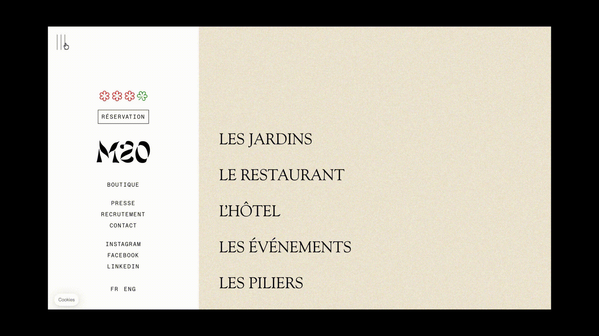

Participation à l’élaboration du site internet et des déclinaisons de la nouvelle identité visuelle du restaurant de Mauro Colagreco, Mirazur au sein du studio Keys.
Site Web, identité visuelle, design éditorial
